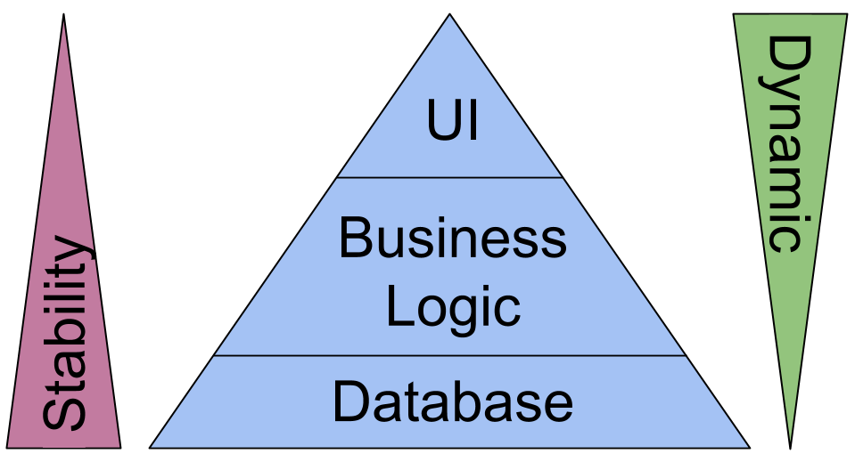

TODO
- DB Basics
- https://en.wikipedia.org/wiki/Database_normalization / https://de.m.wikipedia.org/wiki/Normalisierung_(Datenbank)
- http://stackoverflow.com/questions/762937/whats-the-difference-between-identifying-and-non-identifying-relationships
- CAP and Acid
- https://www.quora.com/What-is-the-relation-between-SQL-NoSQL-the-CAP-theorem-and-ACID
- https://www.infoq.com/articles/cap-twelve-years-later-how-the-rules-have-changed
- https://en.wikipedia.org/wiki/CAP_theorem / https://de.m.wikipedia.org/wiki/CAP-Theorem
- DDD Basics
- http://www.infoq.com/minibooks/domain-driven-design-quickly
- http://domainlanguage.com/wp-content/uploads/2016/05/DDD_Reference_2015-03.pdf
- https://en.wikipedia.org/wiki/Domain-driven_design
- MySQL
- https://dev.mysql.com/doc/refman/5.7/en/document-store.html
- https://dev.mysql.com/doc/refman/5.7/en/innodb-index-types.html
- http://mysqlserverteam.com/generated-columns-in-mysql-5-7-5/ http://dev.mysql.com/doc/refman/5.7/en/innodb-auto-increment-handling.html
Before Designing a DB
- Context
- Functional requirements
- Non functional requirements
Why is good DB design important?

What is Architecture?
Somewhat hard to define
Can only be defined in an implicit way
Software architecture is the set of design decisions which, if made incorrectly, may cause your project to be canceled. (Eoin Woods)
Architecture is about the important stuff. Whatever that is. (Martin Fowler)
Problem of Architecture:
Many times it is not obvious what are architectural decisions
(because it is only defined implicitly in the context of a project)
Sometimes it only becomes clear in hindsight
Domain-Driven Design
Domain-Driven Design is an approach to the development of complex software in which we:
Domain-Driven Design
Shortened from: https://domainlanguage.com/ddd/patterns/DDD_Reference_2011-01-31.pdf
- domain: A sphere of knowledge, influence, or activity. Application of a program is the domain of the software.
- model: A system of abstractions that describes selected aspects of a domain.
- ubiquitous language: A language structured around the domain model and used by all team members within a bounded context.
- context: The setting in which a word or statement appears that determines its meaning.
Statements about a model can only be understood in a context.
- bounded context: A description of a subsystem, or the work of a particular
team within which a particular model is defined and applicable.
Ubiquitous Language
- common language for all share-holders
- not only a class- or ER-diagram (because this only speaks to technical people)
- clearly defines the language and you should stick to
- a change in language warrants a change in the model